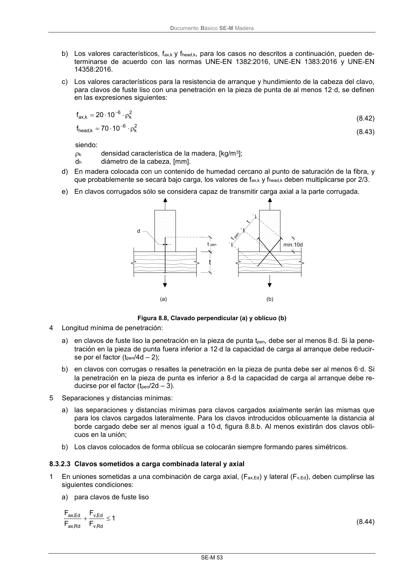

DB-SE-M · 8.3.2.3 Clavos sometidos a carga combinada lateral y axial · versión 2019-12-20 · capa oficial
Formatos: JSON compacto · Markdown · PDF fuente
Ámbito del documento · texto del ámbito · documento y tablas
ID técnico a0116 · PDF pág. 59-60 · jerarquía no validada por persona · contrastado con el literal de la página 59 (candidato tipográfico); no validado por persona · padre: raíz
8.3.2.3 Clavos sometidos a carga combinada lateral y axial 1 En uniones sometidas a una combinación de carga axial, (Fax,Ed) y lateral (Fv,Ed), deben cumplirse las siguientes condiciones: a) para clavos de fuste liso 1 F F F F Rd ,v Ed ,v Rd , ax Ed , ax (8.44) DocumentoBásico SE-M Madera SE-M 54 b) para clavos que no sean de fuste liso (como se definen en la norma UNE-EN 14592:2009+A1:2012): 1 F F F F 2 Rd ,v Ed ,v 2 Rd , ax Ed , ax (8.45) siendo: Fax,Ed y Fv,Ed capacidades de cálculo de la unión cargada con esfuerzo axial o lateral de forma in- dependiente.

PDF fuente redistribuible: copia fiel enlazada en esta página (SHA256 verificado).